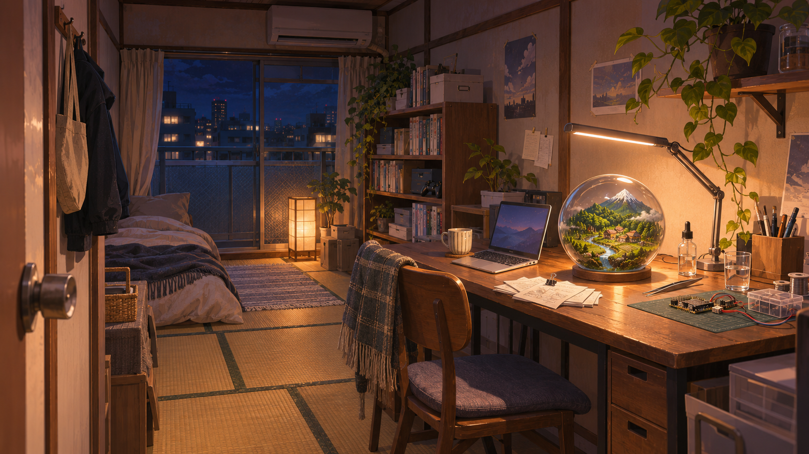

🚧 工事中・試遊版 0.25
六畳一間の創造主
答えを与えるのではなく、考えるきっかけを。
小さな世界の発見と、人から人へ託される物語を見守ります。

制作途中の版について
- 原作第1〜300話の結末を含みます。序盤はゲーム用要約、後半は原文と観測課題を中心に進みます。
- 代表的な後半背景は12枚。全場面・全人物に専用画像がある版ではありません。
- 操作はクリック／タップが基本です。場面を読み、根拠を観察して、共同課題を確かめます。
- 手動セーブは3枠。保存は使用している端末・ブラウザに残ります。ファイル直開きやローカル版の保存は自動では移りません。元のゲームでJSONを書き出し、公開版で読み込めます。
- 音楽は最初の操作後に開始します。文字サイズ・演出・音量は設定から変更できます。
- PC・スマートフォンのブラウザ向けです。実端末での操作と聴感、作者による最終確認は継続中です。
工事中のため、画像・操作・バランスは今後変更されます。
2026年11月12日公開準備。作者提供の原作・画像・音楽を使用した制作中のゲームです。